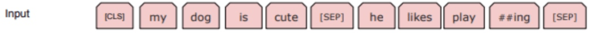
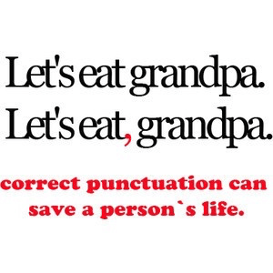
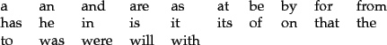
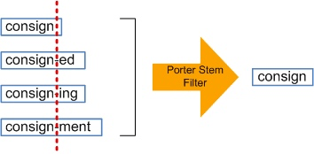

Tokenization
Contents
Tokenization#
Overview#
NLP systems have three main components that help machines understand natural language:
Tokenization: Splitting a string into a list of tokens.
Embedding: Mapping tokens to vectors.
Model: A neural network that takes token vectors as input and outputs predictions.
Tokenization is the first step in the NLP pipeline.
Tokenization is the process of splitting a string into a list of tokens.
For example, the sentence “I like to eat apples” can be tokenized into the list of tokens
["I", "like", "to", "eat", "apples"].The tokens can be words, characters, or subwords.
What is Tokenization?#
Tokenization is the process of representing a text in smaller units called tokens.
In a very simple case, we can simply map every word in the text to a numerical index.
For example, the sentence “I like to eat apples” can be tokenized into the list of tokens:
["I", "like", "to", "eat", "apples"].Then, each token can be mapped to a unique index, such as:
{"I": 0, "like": 1, "to": 2, "eat": 3, "apples": 4}.There are more linguistic features to consider when tokenizing a text, such as punctuation, capitalization, and so on.
Why do we need tokenization?#
“How can we make a machine read a sentence?”
Machines don’t know any language, nor do they understand sounds or phonetics.
They need to be taught from scratch.
The first step is to break down the sentence into smaller units that the machine can process.
Tokenization determines how the input is represented to the model.
This decision has a huge impact on the performance of the model.
How do we identify words in text?#
For a language like English, this seems like a simple task. We can simply split the text by spaces.
A word is any sequence of alphabetical characters between whitespaces that’s not a punctuation mark?
However, there are many cases where this is not true.
What about contractions?
“I’m” is a single word, but it is split into two tokens.
What about abbreviations?
“U.S.” is a single word, but it is split into two tokens.
What about hyphenated words?
“self-driving”, “R2-D2” are single words, but they are split into two tokens.
What about complex names?
“New York” is a single word, but it is split into two tokens.
What about languages like Chinese that have no spaces between words?
Words aren’t just defined by blanks#
Problem 1: Compounding
“ice cream”, “website”, “web site”, “New York-based”
Problem 2: Other writing systems have no blanks
Chinese: 我开始写⼩说 = 我 开始 写 ⼩说 (I start(ed) writing novel(s))
Problem 3: Contractions and Clitics
English: “doesn’t” , “I’m” ,
Italian: “dirglielo” = dir + gli(e) + lo (tell + him + it)
Tokenization Standards#
Any actual NLP system will assume a particular tokenization standard.
NLP systems are usually trained on particular corpora (text datasets) that everybody uses.
These corpora often define a de facto standard.
Penn Treebank 3 standard:
Input:
"The San Francisco-based restaurant," they said, "doesn’t charge $10".Output:
“_ The _ San _ Francisco-based _ restaurant _ , _” _ they_ said* ,* "_ does _ n’t _ charge_ $_ 10 _ " _ . _
What about sentence boundaries?#
How can we identify that this is two sentences?
Mr. Smith went to D.C. Ms. Xu went to Chicago instead.
We can use a period to identify the end of a sentence.
However, this is not always true.
Abbreviations, such as “Mr.”, “D.C.”, “Ms.”, “U.S.”, “etc.” can be followed by a period.
How many sentences are in this text?
"The San Francisco-based restaurant," they said, "doesn’t charge $10".
Answer: just one, because the comma is not a sentence boundary.
Similarly, we typically treat this also just as one sentence:
They said: ”The San Francisco-based restaurant doesn’t charge $10".
Spelling variants, typos, etc.#
The same word can be written in different ways:
with different
capitalizations:lowercase “cat” (in standard running text)
capitalized “Cat” (as first word in a sentence, or in titles/headlines),
all-caps “CAT” (e.g. in headlines)
with different abbreviation or hyphenation styles:
US-based, US based, U.S.-based, U.S. based
US-EU relations, U.S./E.U. relations, …
with spelling variants (e.g. regional variants of English):
labor vs labour, materialize vs materialise,
with typos (teh)
How many different words are there in English?#
Counting words: tokens vs. types#
When counting words in text, we distinguish between word types and word tokens:
The vocabulary of a language is the set of (unique) word types:
V = {a, aardvark, …., zyzzva}
The tokens in a document include all occurrences of the word types in that document or corpus
The frequency of a word (type) in a document
= the number of occurrences (tokens) of that type
How large is the vocabulary of English (or any other language)?
Vocabulary size = the number of distinct word types
Google N-gram corpus: 1 trillion tokens, 13 million word types that appear 40+ times
You may have heard statements such as:
adults know about 30,000 wordsyou need to know at least 5,000 words to be fluent
If you count words in text, you will find that …
a few words (mostly closed-class) are very frequent (the, be, to, of, and, a, in, that,…)
most words (all open class) are very rare.
even if you’ve read a lot of text, you will keep finding words you haven’t seen before.
Zipf’s law: the long tail#
In a natural language:
A small number of events (e.g. words) occur with high frequency
A large number of events occur with very low frequency

Implications of Zipf’s Law for NLP#
The good:
Any text will contain a number of words that are very common.
We have seen these words often enough that we know (almost) everything about them.
These words will help us get at the structure (and possibly meaning) of this text.
The bad:
Any text will contain a number of words that are rare.
We know something about these words, but haven’t seen them often enough to know everything about them.
They may occur with a meaning or a part of speech we haven’t seen before.
The ugly:
Any text will contain a number of words that are unknown to us.
We have never seen them before, but we still need to get at the structure (and meaning) of these texts.
Dealing with the bad and the ugly#
NLP systems need to be able to generalize from the known to the unknown.
There are two main strategies:
Linguistic knowledge
a finite set of grammatical rules is enough to generate an infinite number of languages
Machine learning or statistical methods
learn representations of words from large amounts of data that often work well for unseen words
How do we represent words?#
Option 1: Words are atomic symbols
Each (surface) word is a unique symbol
Add some generalization rules to map different surface forms to the same symbol
Normalization: map all variants of the same word (form) to the same canonical variante.g. lowercase everything, normalize spellings, perhaps spell-check)
Lemmatization: map each word to its lemma (esp. in English, the lemma is still a word in the language, but lemmatized text is no longer grammatical)Stemming: remove endings that differ among word forms (no guarantee that the resulting symbol is an actual word)
Option 2: Represent the structure of each word
"books" => "book N pl" (or "book V 3rd sg")
This requries a morphological analyzer
The output is often a lemma (e.g. “book”) and morphological features (e.g. “N pl” for noun plural, “V 3rd sg” for verb 3rd person singular)
This is particularly useful for languages with rich morphology (e.g. Turkish, Finnish, Hungarian, etc.)
Less useful for languages with little morphology (e.g. English, German, etc.)
How do we represent unknown words?#
Many NLP systems assume a fixed vocabulary, but still have to handle out-of-vocabulary (OOV) words.
Option 1: the UNK token
Replace all rare words (with a frequency at or below a given threshold, e.g. 2, 3, or 5) in your training data with an UNK token (UNK = “Unknown word”).
Replace all unknown words that you come across after training (including rare training words) with the same UNK token
Option 2: substring-based representations
Often used in neural models
Represent (rare and unknown) words [“Champaign”] as sequences of characters [‘C’, ‘h’, ‘a’,…,’g’, ’n’] or substrings [“Ch”, “amp”, “ai”, “gn”]
Byte Pair Encoding (BPE): learn which character sequences are common in the vocabulary of your language, and treat those common sequences as atomic units of your vocabulary
Which words appear in this text?
Of course he wants to take the advanced course too. He already took two beginners’ courses.
Actual text doesn’t consist of dictionary entries:
wants is a form of want
took is a form of take
courses is a form of course
Linguists distinguish between
the (surface) forms that occur in text: want, wants, beginners’, took,…
and the lemmas that are the uninflected forms of these words: want, beginner, take, …
In NLP, we sometimes map words to lemmas (or simpler “stems”), but the raw data always consists of surface forms
How many different words are there?#
Inflection creates different forms of the same word:
Verbs: to be, being, I am, you are, he is, I was,
Nouns: one book, two books
Derivation creates different words from the same lemma:
grace ⇒ disgrace ⇒ disgraceful ⇒ disgracefully
Compounding combines two words into a new word:
cream ⇒ ice cream ⇒ ice cream cone ⇒ ice cream cone bakery
Word formation is productive:
New words are subject to all of these processes: Google ⇒ Googler, to google, to ungoogle, to misgoogle, googlification, ungooglification, googlified, Google Maps, Google Maps service,…
Inflectional morphology in English#
Verbs:
Infinitive/present tense: walk, go
3rd person singular present tense (s-form): walks, goes
Simple past: walked, went
Past participle (ed-form): walked, gone
Present participle (ing-form): walking, going
Nouns:
Common nouns inflect for number: singular (book) vs. plural (books)
Personal pronouns inflect for person, number, gender, case: I saw him; he saw me; you saw her; we saw them; they saw us.
Derivational morphology in English#
Nominalization:
V + -ation: computerization, privatization, democratization,…
V + -er: killer, trainer, driver,…
Adj + -ness: fuzziness, kindness,…
Negation:
un-: undo, unseen, unkind,…
mis-: mistake, mislead, misbehave,…
Adjectivization:
V + -able: doable, teachable,…
N + -al: national, personal,…
Morphemes: stems, affixes#
dis-grace-ful-ly
prefix-stem-suffix-suffix
Many word forms consist of a stem plus a number of affixes (prefixes or suffixes)
Exceptions: Infixes are inserted inside the stem Circumfixes (German gesehen) surround the stem
Morphemes: the smallest (meaningful/grammatical) parts of words.
Stems (grace) are often
free morphemes. Free morphemes can occur by themselves as words.Affixes (dis-, -ful, -ly) are usually
bound morphemes. Bound morphemes have to combine with others to form words.
Morphemes and morphs
The same information (plural, past tense, …) is often expressed in different ways in the same language.
One way may be more common than others, and exceptions may depend on specific words:
Most plural nouns: add -s to singular: book-books, but: box-boxes, fly-flies, child-children
Most past tense verbs add -ed to infinitive: walk-walked, but: like-liked, leap-leapt Such exceptions are called
irregular word forms
Linguists say that there is one underlying morpheme (e.g. for plural nouns) that is “realized” as different “surface” forms (morphs) (e.g. -s/-es/-ren)
Allomorphs: two different realizations (-s/-es/-ren) of the same underlying morpheme (plural)
“Surface”?
This terminology comes from Chomskyan Transformational Grammar.
Dominant early approach in theoretical linguistics, superseded by other approaches (“minimalism”).
Not computational, but has some historical influence on computational linguistics (e.g. Penn Treebank)
“Surface” = standard English (Chinese, Hindi, etc.).
“Surface string”= a written sequence of characters or words
vs. “Deep”/“Underlying” structure/representation:
A more abstract representation.
Might be the same for different sentences/words with the same meaning.
Tokenization#
Input:#
A set of documents (e.g. text files), \(D\)
Output (tokens):#
A sequence, \(W\) , containing a list of tokens – words or word pieces for use in natural language processing
Output (n-grams):#
A matrix, \(X\), containing statistics about word/phrase frequencies in those documents.
Tokens#
The most basic unit of representation in a text.
characters: documents as sequence of individual letters {h,e,l,l,o, ,w,o,r,l,d}
words: split on white space {hello, world}
n-grams: learn a vocabulary of phrases and tokenize those:
“hellow world → hellow_world”
Goals of Tokenization#
To summarize: A major goal of tokenization is to produce features that are
predictivein the learning taskinterpretableby human investigatorstractableenough to be easy to work with
Two broad approaches:
convert documents to vectors, usually frequency distributions over pre-processed n-grams.
convert documents to sequences of tokens, for inputs to sequential models.
A Traditional Tokenization Pipeline#
Extract text from documents (e.g. PDF, HTML, XML, …)
Tokenize text into words
Normalize words (e.g. lowercasing, stemming, lemmatization)
Remove stop words (e.g. “the”, “a”, “an”, “in”, …)
Build a vocabulary of words
Convert documents to vectors of word counts or TF-IDF scores
Train a model on those vectors
Subword Tokenization for Sequence Models#
Modern transformer models (e.g. BERT, GPT) use subword tokenization:
construct character-level n-grams
whitespace treated the same as letters
all letters to lowercase, but add a special character for the next letter being capitalized.
e.g., BERT’s WordPiece tokenizer:
character-level byte-pair encoder
learns character n-grams to breaks words like “playing” into “play” and “##ing”.
have to fix a vocabulary size: e.g. BERT uses 30K.

Segmenting paragraphs/sentences#
Many tasks should be done on sentences, rather than corpora as a whole.
spaCy is a good (but not perfect) job of splitting sentences, while accounting for periods on abbreviations, etc.
pySBD is a better option for splitting sentences.
There isn’t a grammar-based paragraph tokenizer.
most corpora have new paragraphs annotated.
or use line breaks.
Pre-processing#
An important piece of the “art” of text analysis is deciding what data to throw out.
Uninformative data add noise and reduce statistical precision.
They are also computationally costly.
Pre-processing choices can affect down-stream results, especially in unsupervised learning tasks (Denny and Spirling 2017).
some features are more interpretable: “govenor has” / “has discretion” vs “govenor has discretion”.
Capitalization#
Removing capitalization is a standard corpus normalization technique
usually the capitalized/non-capitalized version of a word are equivalent – e.g. words showing up capitalized at beginning of sentence
→ capitalization not informative.
Also: what about “the first amendment” versus “the First Amendment”?
Compromise: include capitalized version of words not at beginning of sentence.
For some tasks, capitalization is important
needed for sentence splitting, part-of-speech tagging, syntactic parsing, and semantic role labeling.
For sequence data, e.g. language modeling – huggingface tokenizer takes out capitalization but then add a special “capitalized” token before the word.
Punctuation#
 (Source: Chris Bail text data slides.)
Inclusion of punctuation depends on your task:
if you are vectorizing the document as a bag of words or bag of n-grams, punctuation won’t be needed.
like capitalization, punctuation is needed for annotations (sentence splitting, parts of speech, syntax, roles, etc)
also needed for language models.
Numbers#
for classification using bag of words:
can drop numbers, or replace with special characters
for language models:
just treat them like letters.
GPT-3 can solve math problems (but not well, this is an area of research)
Drop Stopwords?#

Stopwords are words that are so common that they don’t carry much information.
can drop stopwords by themselves, but keep them as part of phrases.
can filter out words and phrases using part-of-speech tags (later).
Stemming/lemmatizing#
Effective dimension reduction with little loss of information.
Lemmatizer produces real words, but N-grams won’t make grammatical sense
e.g., “I am running” → “I am run”

Bag-of-words representation#
Say we want to convert a corpus \(D\) to a matrix \(X\):
In the
“bag-of-words”representation, a row of \(X\) is just the frequency distribution over words in the document corresponding to that row.
Counts and frequencies#
Document counts: number of documents where a token appears.
Term counts: number of total appearances of a token in corpus.
Term frequency:
Building a vocabulary#
An important featurization step is to build a vocabulary of words:
Compute document frequencies for all words
Inspect low-frequency words and determine a minimum document threshold.
e.g., 10 documents, or .25% of documents.
Can also impose more complex thresholds, e.g.:
appears twice in at least 20 documents
appears in at least 3 documents in at least 5 years
Assign numerical identifiers to tokens to increase speed and reduce disk usage.
TF-IDF Weighting#
TF/IDF: “Term-Frequency / Inverse-Document-Frequency.”
The formula for word \(w\) in document \(k\):
The formula up-weights relatively rare words that do not appear in all documents.
These words are probably more distinctive of topics or differences between documents.
Example: A document contains 100 words, and the word appears 3 times in the document.
The TF is .03. The corpus has 100 documents, and the word appears in 10 documents.
the IDF is 0log(100/10) ≈ 2.3, so the TF-IDF for this document is .03×2.3 = .07.
Say the word appears in 90 out of 100 documents:
Then the IDF is 0.105, with TF-IDF for this document equal to .003.
scikit-learn’s TfidfVectorizer#
corpus is a sequence of strings, e.g. pandas data-frame columns.
I pre-processing options: strip accents, lowercase, drop stopwords,
n-grams: can produce phrases up to length n (words or characters).
vocab options: min/max frequency, vocab size
post-processing: binary, l2 norm, (smoothed) idf weighting, etc
from sklearn.feature_extraction.text import TfidfVectorizer
from sklearn.datasets import fetch_20newsgroups
categories = ["alt.atheism", "soc.religion.christian", "comp.graphics", "sci.med"]
twenty_train = fetch_20newsgroups(
subset="train", categories=categories, shuffle=True, random_state=42
)
tfidf = TfidfVectorizer(
sublinear_tf=True,
min_df=5,
norm="l2",
encoding="latin-1",
ngram_range=(1, 2),
stop_words="english",
)
features = tfidf.fit_transform(twenty_train.data).toarray()
print(features.shape)
# print(tfidf.get_feature_names())
(2257, 14303)
Other Transformations#
Could add log counts, quadratics in counts, etc.
Could also add pairwise interactions bet ween word counts/frequencies.
These often are not done much because of the dimensionality problem.
Could use PCA to reduce dimensionality, but this is a lossy transformation.
What are N-grams?#
N-grams are contiguous sequences of n tokens.
Bigrams: 2-grams
Trigrams: 3-grams
Quadgrams: 4-grams
Google Developers recommend tf-idf-weighted bigrams as a baseline for text classification.
For example, the sentence “The quick brown fox jumps over the lazy dog” has the following bigrams:
[“The quick”, “quick brown”, “brown fox”, “fox jumps”, “jumps over”, “over the”, “the lazy”, “lazy dog”]
for trigrams:
[“The quick brown”, “quick brown fox”, “brown fox jumps”, “fox jumps over”, “jumps over the”, “over the lazy”, “the lazy dog”]
Text classification flowchart (from Google Developers):
N-grams and high dimensionality#
N-grams will blow up your feature space:
1-grams: 1000 words → 1000 features
2-grams: 1000 words → 500,500 features
Filtering out low-frequency and uninformative n-grams is important.
Google Developers say that a feature space of 20,000 features will work well for descriptive and predictive text classification.
Hashing Vectorizer#
Rather than make a one-to-one lookup for each n-gram, put n-grams through a hashing function that takes an arbitrary string and outputs an integer in some range (e.g. 1 to 10,000).
This is a lossy transformation, but it can be useful for very large feature spaces.
The hashing function is deterministic, so the same string will always map to the same integer.
from sklearn.feature_extraction.text import HashingVectorizer
vectorizer = HashingVectorizer(
n_features=2**4, stop_words="english", alternate_sign=False
)
X = vectorizer.transform(twenty_train.data)
print(X.shape)
(2257, 16)
Collocations#
Collocations are phrases that occur together more often than would be expected by chance.
Non-compositional: the meaning is not the sum of the parts
e.g., “New York” is not the sum of “New” and “York”
Non-substitutable: cannot substitute one component with synonyms
e.g., “fast food” is not the same as “quick food”
Non-modifiable: cannot modify with additional words
e.g., “kick around the bucket” is not the same as “kick the bucket around”
Pointwise Mutual Information#
Pointwise Mutual Information (PMI) is a measure of how often two words co-occur in a corpus.
PMI is defined as:
where \(w_1\) and \(w_2\) are words in the vocabulary, and \(w_1\), \(w_2\) is the N-gram \(w_1\_w_2\). ranks words by how often they collocate, relative to how often they occur apart.
Generalizes to longer phrases (length N) as the geometric mean of the probabilities:
Caveat: Rare words will have high PMI, but this is not necessarily a good thing.
Can use a threshold to filter out rare words.
Out-of-Vocabulary Words (OOV) for N-grams#
OOV words are words that are not in the vocabulary.
OOV words are a problem for N-gram models.
Can be replaced with a special token, e.g.
<UNK>.Can be replaced with the POS tag, e.g.
<NOUN>.Can be replaced with the hypernym, e.g.
<ANIMAL>.Can use a hash function to map OOV words to a fixed number of buckets.
What are parts of speech?#
Nouns, Pronouns, Proper Nouns,
Verbs, Auxiliaries,
Adjectives, Adverbs
Prepositions, Conjunctions,
Determiners, Particles
Numerals, Symbols,
Interjections, etc.
See e.g. https://universaldependencies.org/u/pos/
POS Tagging#
Words often have more than one POS:
The back door
(adjective)On my back
(noun)Win the voters back
(particle)Promised to back the bill
(verb)
The POS tagging task:
Given a sequence of words, assign a POS tag to each word.
The POS tag is a label from a fixed set of tags.
Due to ambiguity (and unknown words), we cannot look up the POS tag in a dictionary.
Why POS Tagging?#
POS tagging is one of the first steps in many NLP tasks.
For a traditional NLP pipeline, POS tagging is regarded as a prerequisite for further processing.
Syntactic parsing: POS tags are used to build a parse tree.
Information extraction: POS tags are used to identify named entities, relations, etc.
Although POS tagging is not a prerequisite for many modern NLP tasks, it is still useful.
To understand the basic structure of a sentence.
Creating a POS Tagger#
A POS tagger is a classifier that assigns a POS tag to each word in a sentence.
To handle ambiguity, a POS tagger relies on learned models.
For a
new language or domain, a POS tagger can be trained from scratch.Define a set of POS tags.
Annotate a corpus with POS tags.
For an
existing language or domain, a POS tagger can be trained on the existing annotated corpus.Obtain a corpus with POS tags.
To train a POS tagger,
Choose a POS tagging algorithm. (e.g. HMM, CRF, etc.)
Train the POS tagging algorithm on the annotated corpus.
Evaluate the POS tagging algorithm on a test set.

# !python -m spacy download en
import spacy
nlp = spacy.load("en_core_web_sm")
text = "POS tagging is the process of marking up a word in a text (corpus) as corresponding to a particular part of speech, based on both its definition and its context."
for token in nlp(text):
print(token.text, "=>", token.pos_, "=>", token.tag_)
2022-10-22 08:42:06.914835: I tensorflow/core/platform/cpu_feature_guard.cc:193] This TensorFlow binary is optimized with oneAPI Deep Neural Network Library (oneDNN) to use the following CPU instructions in performance-critical operations: AVX2 FMA
To enable them in other operations, rebuild TensorFlow with the appropriate compiler flags.
POS => PROPN => NNP
tagging => NOUN => NN
is => AUX => VBZ
the => DET => DT
process => NOUN => NN
of => ADP => IN
marking => VERB => VBG
up => ADP => RP
a => DET => DT
word => NOUN => NN
in => ADP => IN
a => DET => DT
text => NOUN => NN
( => PUNCT => -LRB-
corpus => PROPN => NNP
) => PUNCT => -RRB-
as => ADP => IN
corresponding => VERB => VBG
to => ADP => IN
a => DET => DT
particular => ADJ => JJ
part => NOUN => NN
of => ADP => IN
speech => NOUN => NN
, => PUNCT => ,
based => VERB => VBN
on => ADP => IN
both => CCONJ => CC
its => PRON => PRP$
definition => NOUN => NN
and => CCONJ => CC
its => PRON => PRP$
context => NOUN => NN
. => PUNCT => .
Dependency Parsing#
Dependency parsing is the task of assigning a syntactic dependency to each word in a sentence.
In dependency parsing, dependency tags represent the grammatical function of a word in a sentence.
For example, in the sentence “The quick brown fox jumps over the lazy dog”,
A dependency exists from the
foxto thebrownin which thefoxacts as the head and thebrownacts as the dependent or child.This dependency is labeled
amod(adjectival modifier).
Universal Dependency Relations

from spacy import displacy
sent = "The quick brown fox jumps over the lazy dog."
displacy.render(nlp(sent), jupyter=True)
Constituency Parsing#
Constituency parsing is the task of analyzing a sentence by breaking it into sub-phrases (constituents).
These sub-phrases belong to a fixed set of syntactic categories, such as NP (noun phrase) and VP (verb phrase).
“It took me more than two hours to translate a few pages of English.”